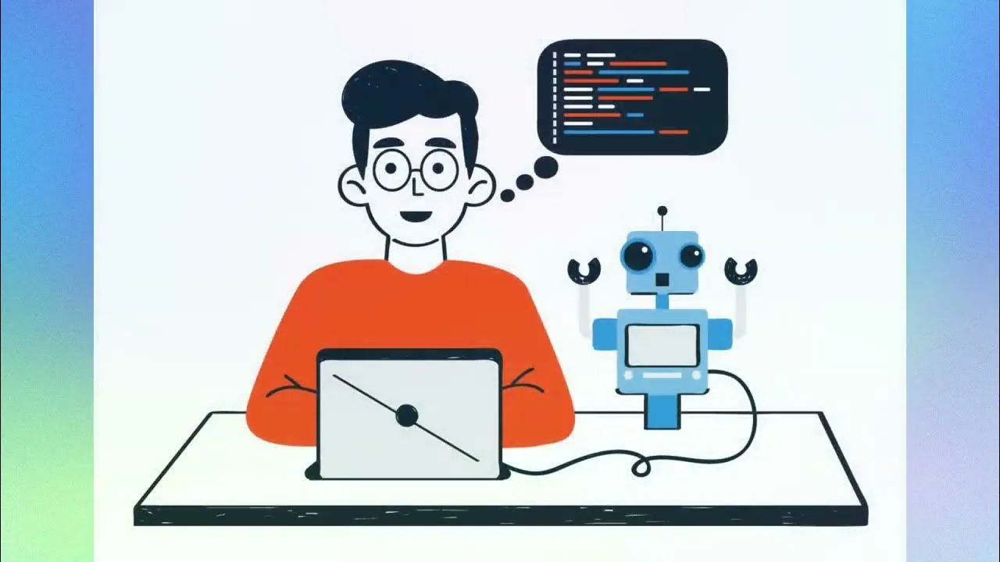

Несмотря на рост ИИ можно однозначно сказать: все кто разбираются в коде, то есть могут написать какой-либо скрипт, могут не беспокоиться на счет работы, ведь этот самый ИИ нужно кому-то поддерживать и обслуживать.
Как раз за счет роста ИИ появляется все больше запросов, вопросов и много нового, чему нужно обучить эти самые ИИ. А кому это делать кроме как программистам? Рост этой работы и придает рост к зарплате.
Изучение рынка труда и выбор языка, на котором вы будете программировать (Чаще всего, и по совместительству лучше, будет Python).
Составление плана обучения, поиск видео уроков (легче всего искать сразу плейлисты) с наличием "домашнего задания", то есть практики.
Распределение дней обучения и отдыха, так как важно не переусердствовать.
Провести тестовый период обучения и откорректировать по нужде план.
После окончания курса обучения по языку программирования попробовать себя в задачах разного уровня и сделать выводы.

Как и во всех профессиях, умениях и в целом при обучении программированию требуется баланс между теорией и практикой. Это обеспечит эффективность обучения и качество знаний.
Полное или частичное копирование кода из видеороликов, без его понимания, приведет к чрезмерной уверенности в своих силах и возможности сделать такое самому, но чаще всего такие люди просто не смогут написать этот код, ведь не понимают его
Не задавать вопросы, боясь показаться глупым, делает обучение затруднительным (если не невозможным), как для обучающего, так и для обучаемого.
Замечаю сам, что при ошибке в коде новички часто гуглят ошибку, вставляют исправленный код и пишут дальше. В таком подходе нет ничего страшного, но потом они потом совершают те же ошибки, а ИИ уже не в силах исправить их. Для этого нужно не только исправлять ошибки, а еще и учиться на них (как бы банально не звучало).